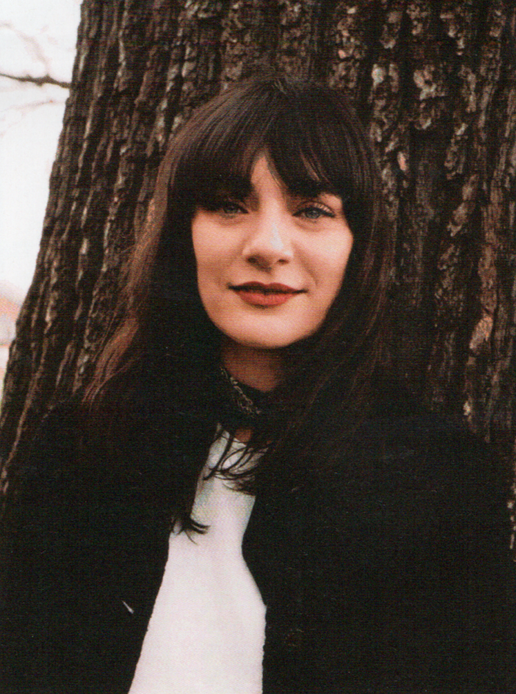

PREGUNTAS PARA LUCÍA PICA
La nueva Directora Creativa de Maquillaje & Color de Chanel creó una nueva colección alrededor del rojo, su color favorito. Le Rouge Collection N°1 se lanzará en nuestro país en octubre.
¿Las palabras o frases que usas demasiado?
“Tipo de...”, nunca paro de decir eso.
¿La cualidad que más te gusta en un hombre?
La ternura.
¿La cualidad que más te gusta en una mujer?
La capacidad de ser ella misma.
¿Qué o quién es el más grande amor de tu vida?
Mi casa.
¿Cuándo y dónde estuviste más feliz?
La última vez que tuve un flechazo con alguien.
¿Qué talento te hubiera gustado tener?
Cantar.
¿Cuál es tu lema?
“Cuando una puerta se cierra, una ventana se abre”.
¿Si pudieras cambiar una sola cosa en ti, qué sería?
Mi necesidad de aprobación.
¿Cuál consideras tu mayor logro?
Mi primera colección de maquillaje para Chanel.
¿Si murieras y regresaras a la vida, qué serías?
No tengo ganas de estar estancada en el purgatorio.
¿Dónde te gustaría vivir?
En el mar.
¿Tu pertenencia más valiosa?
Mi casa.
¿La tristeza más profunda?
La pérdida de libertad.
¿Tu actividad preferida?
Dormir.
¿Tu característica más fuerte?
Actúo de manera instintiva.
¿Qué es lo que más valoras en tus amigos?
La lealtad.
¿Cuál dirías que es la persona que vive que más rechazo te causa?
Cualquier tipo de terrorista.
¿Cómo te gustaría morir?
Evaporándome o a la manera de un héroe de ciencia ficción.